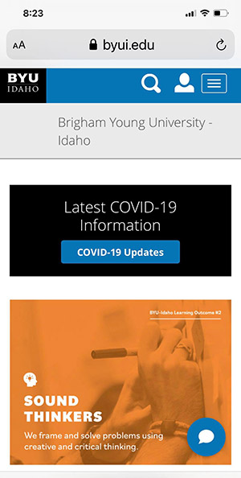

GREAT CONTRAST
byui.edu "BYU-Idaho is one of the best website designs, The use of complementary colors attract attention and create a magnificent contrast, the website design subtly controls the elements that attract the attention of the user, eye contact by the principle of contrast."
GOOD ALIGNMENT
costco.ca"This website is conscious with the alignment, because keep entire page unified, the align is strong and consistent, this good alignment create a visual gap between every element."
PROXIMITY
"In this website all the items looks related each other with closer proximity, clear white space between them indicating the important of the relationship, this create nicer look to the page, and eyes relax with the white doing the comunication really clear."